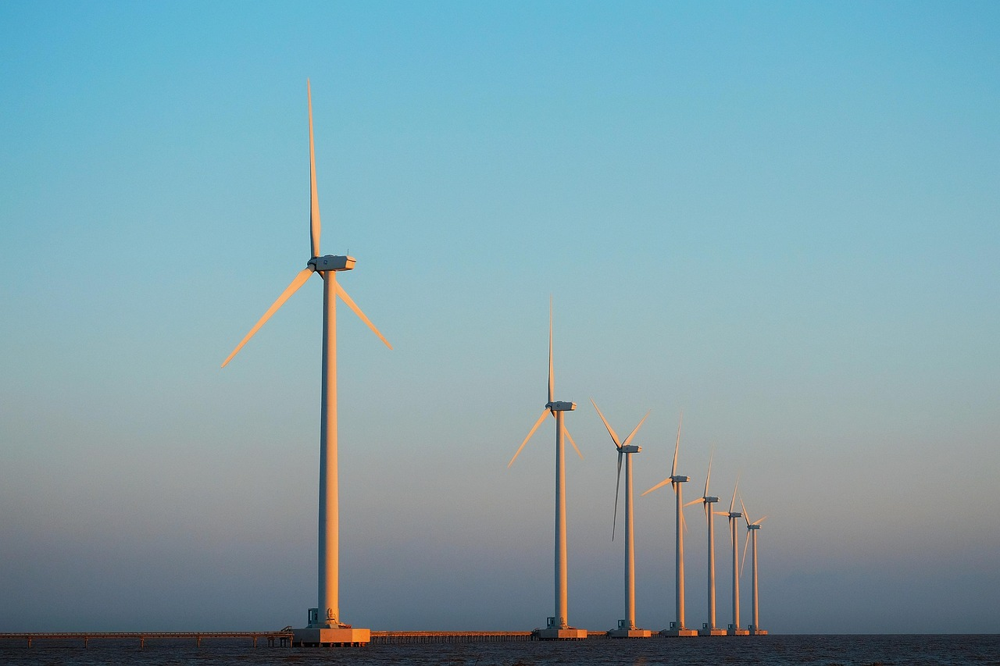
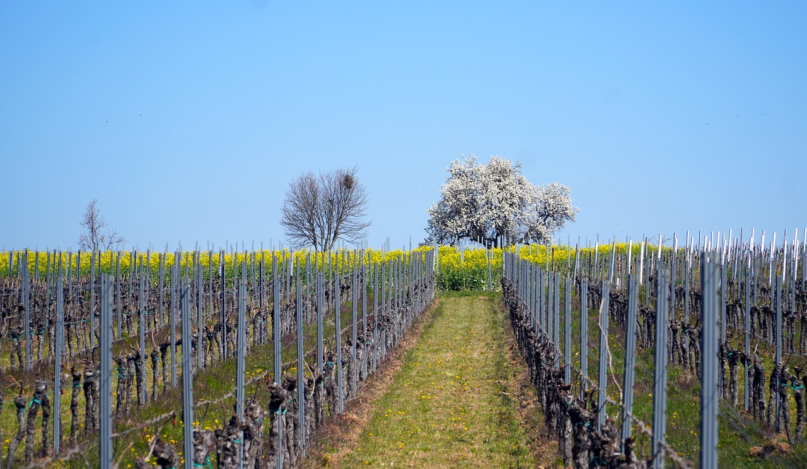

Bæredygtighed
CO2-Aftryk
En vin med omtanke for klimaet
Hos Havblink Hvidvin tager vi klimaaftryk alvorligt.
Vi tror på, at god vin også skal være ansvarlig vin – og derfor arbejder vi målrettet med at mindske CO₂-udledningen i hele vores produktion, fra mark til flaske.
Det starter i vinmarken, hvor vi dyrker økologisk uden kunstgødning eller pesticider, hvilket reducerer belastningen på klima og grundvand.
Vi anvender håndkraft og let maskineri for at minimere brændstofforbrug, og vi tilrettelægger dyrkningen, så jorden binder kulstof frem for at frigive det.
I produktionen benytter vi grøn energi, og vores emballage er udvalgt med vægt på bæredygtighed – letvægtsflasker og genanvendelige materialer.
Vi er ikke perfekte, men vi er ambitiøse. Hver beslutning, vi træffer, er båret af ønsket om at skabe vin med både smag og samvittighed.
For os er det en selvfølge, at en vin, der kommer fra jorden, også skal tage vare på den.
KLIMA
Naturens hånd i hver drue
Klimaet spiller en afgørende rolle i alt, vi gør hos Havblink Hvidvin. Vores marker ligger i et særligt sydfynsk mikroklima, hvor lange somre, blide havvinde og milde vintre skaber en perfekt ramme for druedyrkning.
Det er her, vores druer får tid til at modne langsomt og udvikle deres fine balance mellem syre og sødme.
Den tætte kontakt til havet giver kølige nætter og varme dage, som forlænger modningsperioden og tilfører vinene friskhed og elegance.
Årstidernes naturlige rytme respekteres i hele dyrkningsprocessen – vi følger klimaets puls frem for at tvinge naturen i en bestemt retning.
Klimaets gavmildhed i dette hjørne af Danmark gør det muligt at skabe hvidvine med klarhed, dybde og terroir. Hver flaske bærer smagen af den luft, den sol og det vejr, som har formet den – et ærligt udtryk for naturens rolle i vores håndværk.
